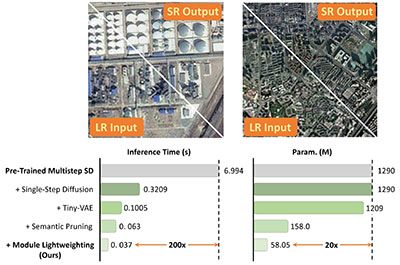
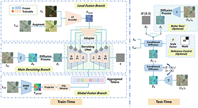
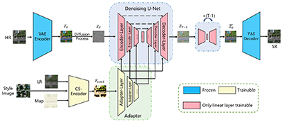
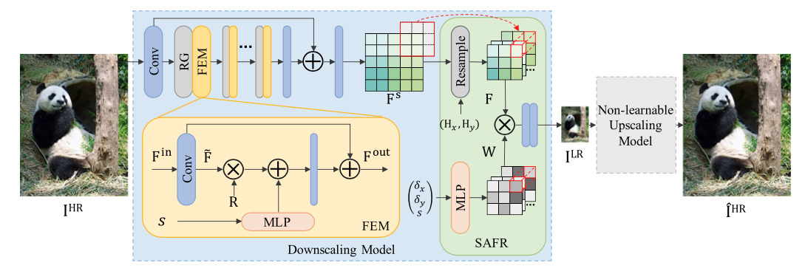
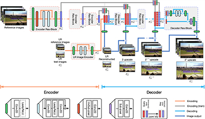
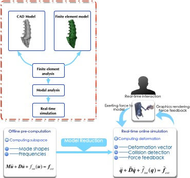
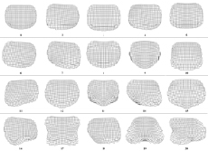
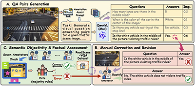
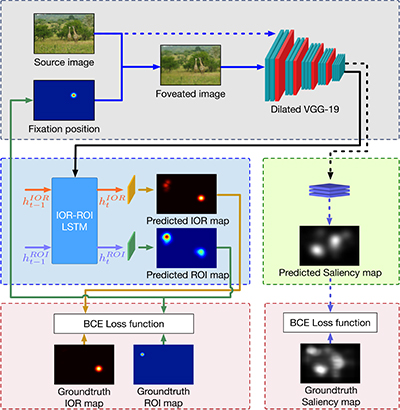
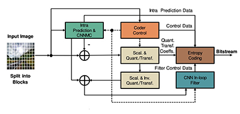

My research lies at the intersection of visual perception, image processing, computer vision, and deep learning. I am particularly interested in developing advanced algorithms that bridge fundamental theory and real-world applications. Current research directions include:
✨Image resampling, including image super-resolution and image downsampling
✨Generative remote sensing image enhancement
✨HDR image production
✨Lightweight models for image enhancement
Publications
Preprints
Journals

SlimDiffSR: Toward Lightweight and Efficient Remote Sensing Image Super-Resolution via Diffusion Model Distillation
@ARTICLE{11688111,
author={Wang, Ce and Hu, Zhenyu and Sun, Wanjie},
journal={IEEE Transactions on Geoscience and Remote Sensing},
title={SlimDiffSR: Toward Efficient Remote Sensing Image Super-Resolution via Diffusion Model Distillation},
year={2026},
volume={64},
pages={5640718-5640718},
doi={10.1109/TGRS.2026.3732853}}

Controllable Reference-Guided Diffusion with Local-Global Fusion for Real-World Remote Sensing Image Super-Resolution
Ce Wang, Wanjie Sun*
IEEE Journal of Selected Topics in Applied Earth Observations and Remote Sensing (IEEE JSTARS), 2026. (中科院二区)
@article{YE2025159,
title = {Map-Assisted remote-sensing image compression at extremely low bitrates},
journal = {ISPRS Journal of Photogrammetry and Remote Sensing},
volume = {223},
pages = {159-172},
year = {2025},
author = {Yixuan Ye and Ce Wang and Wanjie Sun and Zhenzhong Chen},
}

Semantic Guided Large Scale Factor Remote Sensing Image Super-resolution with Generative Diffusion Prior
Ce Wang, Wanjie Sun*
ISPRS Journal of Photogrammetry and Remote Sensing (ISPRS P&RS), 2024. (中科院一区Top, IF=10.6)
@article{HU2025109704,
title = {Lightweight image super-resolution with sliding Proxy Attention Network},
journal = {Signal Processing},
volume = {227},
pages = {109704},
year = {2025},
author = {Zhenyu Hu and Wanjie Sun and Zhenzhong Chen}}

Learned Scale-Arbitrary Image Downscaling for Non-Learnable Upscaling
@ARTICLE{sp2022,
author={Zhang, Yong and Sun, Wanjie and Chen, Zhenzhong},
journal={Signal Processing},
title={Joint image demosaicking and denoising with mutual guidance of color channels},
year={2022},
volume={200},
number={},
pages={108674},
doi={https://doi.org/10.1016/j.sigpro.2022.108674}}

Learning Discrete Representations from Reference Images for Large Scale Factor Image Super-Resolution
Wanjie Sun, Zhenzhong Chen
IEEE Transactions on Image Processing (IEEE TIP), 2022. (中科院一区Top, IF=10.856)
@article{csig2017,
title={渲染器与 Web 服务器耦合实现远程体渲染的交互优化},
author={高瞻 and 孙万捷 and 王杰华 and 蒋峥峥},
year={2017},
volume={22},
number={3},
pages={385-394},
publisher={中国图象图形学报}
}
@article{jcad2017,
title={动态任务分配 CUDA 线程束步进体绘制},
author={孙万捷 and 高瞻 and 潘海燕 and 王杰华 and 蒋峥峥},
journal={计算机辅助设计与图形学学报},
volume={28},
number={10},
pages={1630--1638},
year={2016}
}

Model Reduction and Real-time Simulation of Spinal Soft Tissues
@article{icic2013,
author = {Sun, W. and Gao, Z. and Wang, J. and Wu, W. and Jiang, Z. and Zhao, J.},
year = {2013},
month = {01},
pages = {3103-3108},
title = {Model reduction and Real-time simulation of spinal soft tissues},
volume = {7},
journal = {ICIC Express Letters}
}

基于模型约减的虚拟脊柱及实时仿真
高瞻, 孙万捷, 王杰华, 蒋峥峥, 武卫翔, 陈恩高, 潘飞
系统仿真学报, 2013. (CCF推荐B类中文期刊)
BibTeX
@article{jss2013,
title={基于模型约减的虚拟脊柱及实时仿真},
author={高瞻 and 孙万捷 and 王杰华 and 蒋峥峥 and 武卫翔 and 陈恩高 and 潘飞},
journal={系统仿真学报},
volume={9},
year={2013}
}
Conferences

RoadSceneVQA: Benchmarking Visual Question Answering in Roadside Perception Systems for Intelligent Transportation System
@INPROCEEDINGS{vcip2020,
author={Wang, Huairui and Sun, Wanjie and Chen, Zhenzhong and Yang, Daiqin},
booktitle={2020 IEEE International Conference on Visual Communications and Image Processing (VCIP)},
title={DOVE: Decomposition Oriented Video super-rEsolution},
year={2020},
volume={},
number={},
pages={375-378},
doi={10.1109/VCIP49819.2020.9301825}}

Scanpath Prediction for Visual Attention using IOR-ROI LSTM
Zhenzhong Chen, Wanjie Sun
Proceedings of the Twenty-Seventh International Joint Conference on Artificial Intelligence (IJCAI), 2018.
@inproceedings{ijcai2018,
title={Scanpath prediction for visual attention using ior-roi lstm},
author={Chen, Zhenzhong and Sun, Wanjie},
booktitle={Proceedings of the 27th International Joint Conference on Artificial Intelligence},
pages={642--648},
year={2018}
}

CNN-Optimized Image Compression with Uncertainty based Resource Allocation
Zhenzhong Chen, Yiming Li, Feiyang Liu, Zizheng Liu, Xiang Pan, Wanjie Sun Yingbin Wang, Yan Zhou, Han Zhu, Shan Liu
IEEE Conference on Computer Vision and Pattern Recognition Workshops (CVPRW), 2018.
@inproceedings{cvpr2018,
title={CNN-optimized image compression with uncertainty based resource allocation},
author={Chen, Zhenzhong and Li, Yiming and Liu, Feiyang and Liu, Zizheng and Pan, Xiang and Sun, Wanjie and Wang, Yingbin and Zhou, Yan and Zhu, Han and Liu, Shan},
booktitle={Proceedings of the IEEE Conference on Computer Vision and Pattern Recognition Workshops},
pages={2559--2562},
year={2018}
}
Fundings
🧾2025, 国家自然科学基金面上项目, 主持
🧾2024, 湖北省自然科学基金面上项目, 主持
🧾2023, 湖北省智能地学信息处理湖北省重点实验室开放基金项目, 主持
🧾2022, 国家自然科学基金青年科学基金项目, 主持
🧾2022, 中国博士后科学基金面上项目, 主持
🧾2022, 测绘遥感信息工程国家重点实验室2022年自主科研课题（探索类）, 主持
🧾2021, “博士后创新人才支持计划”项目, 主持
🧾2021, “湖北省博士后创新研究岗位”项目, 主持
Services
Editorial/Program Committee:
📝Area Chair (IEEE ICME 2026)
Journal Reviewer:
📝International Journal of Computer Vision (IJCV)
📝IEEE Transactions on Image Processing (TIP)
📝IEEE Transactions on Multimedia (TMM)
📝IEEE Transactions on Circuits and Systems for Video Technology (TCSVT)
📝IEEE Transactions on Geoscience and Remote Sensing (TGRS)
📝IEEE Transactions on Broadcasting (TBC)
📝IEEE Transactions on Emerging Topics in Computational Intelligence (TETCI)
📝Pattern Recognition (PR)
📝Knowledge-based Systems (KBS)
📝International Journal of Applied Earth Observation and Geoinformation (JAG)
📝Neurocomputing
📝Signal Processing: Image Communication (SP:IC)
📝Computer Vision and Image Understanding
📝The Visual Computer
📝IET Image Processing
📝Scientific Reports
📝The Photogrammetric Record
Conference Reviewer:
📝IEEE International Conference on Multimedia and Expo (ICME)
📝IEEE International Conference on Multimedia Information Processing (MIPR)
📝ACM Symposium On Eye Tracking Research & Applications (ETRA)
Honors
🏆2026, "NTIRE2026, Restore Any Image Model (RAIM) in Wild (Multi-Exposure Image Fusion in Dynamic Scenes)", 1st place
🏆2026, "NTIRE2026, Remote Sensing Infrared Image Super-Resolution", 1st place
🏆2025, "NTIRE2025, Restore Any Image Model (RAIM) in Wild", 1st place in quantitative metrics
🏆2024, "NTIRE2024, Restore Any Image Model (RAIM) in Wild", 2th place in quantitative metrics
🏆2021, "Postdoctoral Program for Innovative Talents", Ministry of Human Resources and Social Security | 2021年度国家人社部“博新计划”入选者
🏆2021, "Graduate Academic Innovation" First Prize, Wuhan University | 武汉大学“研究生学术创新奖”一等奖
🏆2020, "Wang Zhizhuo Innovative Talent" First Prize, Wuhan University | “王之卓创新人才奖”一等奖
🏆2020, "Graduate Academic Innovation" Second Prize, Wuhan University | 武汉大学“研究生学术创新奖”二等奖
🏆2018, Winner Award CVPR 2018 Workshop and Challenge on Learned Image Compression
🏆2014, "Excellent Graduation Project (Thesis) of Colleges and Universities", Jiangsu Province | 江苏省"优秀毕业设计(论文)"一等奖
🏆2012, National Scholarship, Ministry of Education | 国家奖学金